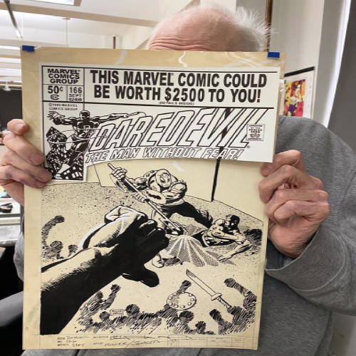
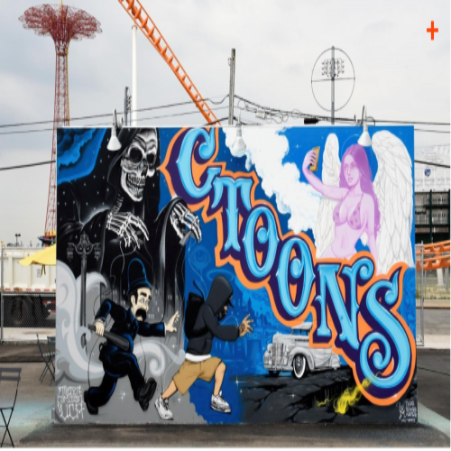
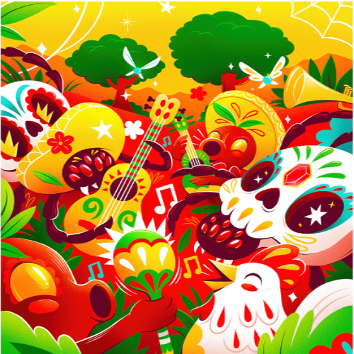

Frank Miller
Frank Miller
Frank Miller is a comic artist
who made comics for DC such as the batman. His art has been a great inspiration as his style
of art is very unique especially in comics.

Mister Cartoons
Mister Cartoons
What Mister Cartoon speaks to me is his
art more specially his tattoo artwork and design. To me this gives a sense of a representation of
the Mexican American art. It is shown in murals and in tattoos a lot of it is displayed in L.A and in
San Francisco.

Luis Pinto
Luis Pinto
Luis Pinto is a graphic designer that creates
a lot of colorful designs that are inspired by hispanic culture. This gives me inspiration as the art
connects to me as I'm hispanic myself. Which for me I want to do design like that in the near
future as well.
